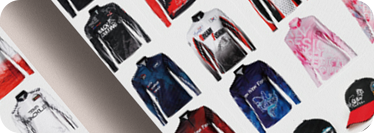
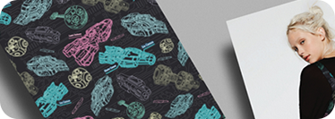

생각을 함께
공유하는디자이너
곽혜영입니다.
공유하는디자이너
곽혜영입니다.

scroll down
Profile


곽혜영
KWAG HYEYEONGEDUCATION
2012.03 ~ 2017.02
계명대학교 미술대학
텍스타일 디자인과 졸업
2021.06 ~ 2021.12
그린컴퓨터 아트 학원
웹퍼블리셔 디지털
인재 양성 과정 수료
WORK
2017.07 ~ 2021.06
주식회사 클라이 디자인팀 대리
CERTIFICATE
2021.09 GTQ 포토샵 1급
2011.03 ITQ 아래한글 A등급
EXPERIENCE
& AWARD
2016.04~2016.11
대구 경북 디자인 센터
청년 직업 아카데미 창직 과정 수료
2016.08 대한민국 텍스타일 디자인 대전 - 입선
2016.06 한국 디자인 트랜드 대전 - 입선
2015.12 디자인 트랜드 사이버 공모전 - 입선
2013.12 사이버 디자인 트랜드 대전 - 입선
TOOLS
Graphic skill
Photoshop IllustratorPublishing skill
Html5 Css3 jQueryPossibility
창의성 Creative
디자인 전공으로 전문 지식을 쌓고 실무를 통해 배우고 경험한
디자인을 바탕으로 끊임없이 발전된 디자인을 창조합니다.
소통 Creative
의견을 내는 것을 두려워하지 않고, 다른 의견을 경청하며 피드백을
적극 수용하는 등 열린 자세로 원활한 소통을 이끌 수 있습니다.
책임감과 인내심 Perseverance
작업을 진행할 때 체계적으로 정리하고 끝까지 해내는 인내심을 가지고 있습니다.
정해진 시간 안에서 책임감을 가지고 주어진 업무를 수행해 나갑니다.

Publishing
redesign
other work


life

전시관람등 영감을 주는 곳에
방문 하는 것을 좋아합니다.
가까운 곳에 방문하여
재충전하는 시간을 보냅니다.
주 3회 이상은 운동을 하여
체력관리를 위해 노력합니다.

다양한 아르바이트 경험으로
책임감과 성실함을 배우게 되었습니다.

재학생때 3년동안 보육원
봉사활동을 다녔습니다.

사람들을 만나 다양한 이야기를 나누며
소통하는 것을 좋아합니다.
contact